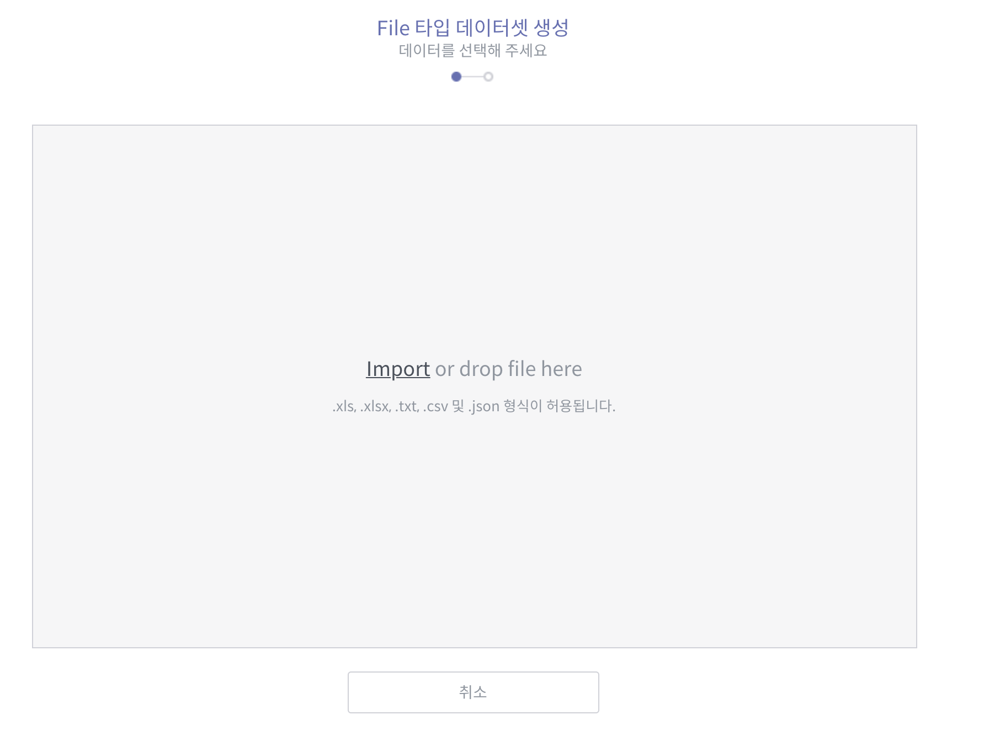
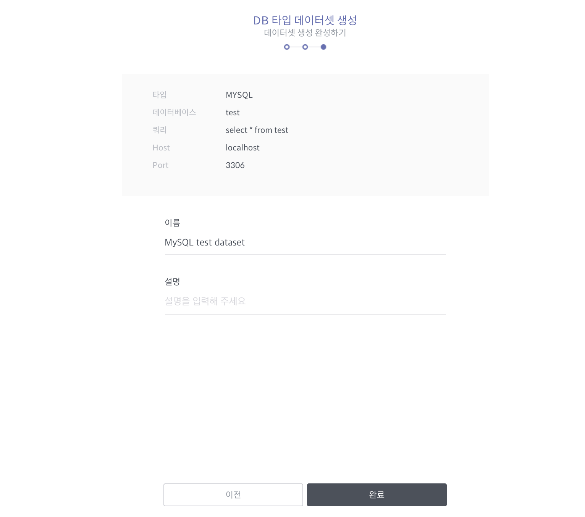
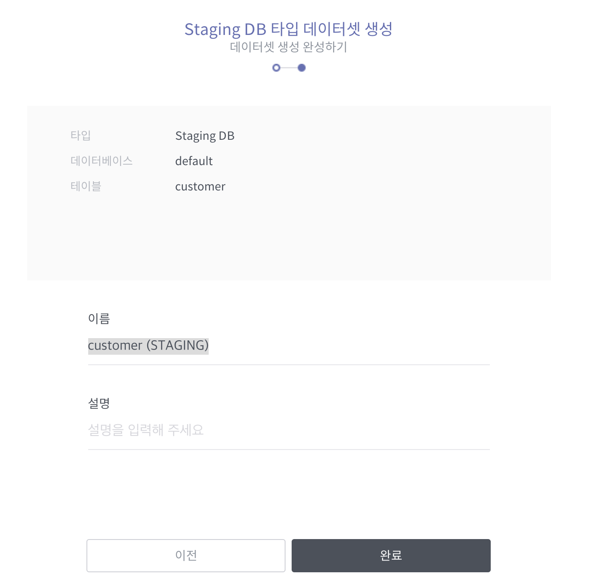

데이터셋 만들기¶
데이터셋은 데이터 프리퍼레이션의 가장 기본이 되는 단위로서, 데이터 연산의 대상이 되는 개체를 가리킵니다. Imported Dataset과 Wrangled Dataset의 두 가지 종류로 존재합니다.
Imported Dataset: 변형 규칙이 적용되기 전의 원천 데이터 개체
Wrangled Dataset: 변형 규칙이 적용되어 분석 작업의 대상이 되는 데이터 개체
Wrangled Dataset은 변형 룰을 정의하는 데이터플로우 지정 과정에서 생성되는 것이며, 본 절차에서 생성되는 데이터셋은 Imported Dataset입니다.
데이터셋 메뉴는 메인 화면 좌측 패널에서 MANAGEMENT > 데이터 프리퍼레이션 > 데이터셋을 통해 진입할 수 있습니다.

그런 다음 데이터셋 홈 화면 우측 상단에서 +새로운 데이터셋 생성 버튼을 클릭하면 새로운 데이터셋을 생성할 수 있습니다.

데이터셋 생성 화면에 들어가면 대상 원천 데이터의 타입을 선택해야 합니다.

파일: 사용자가 소유한 파일을 가져오거나 URI(곧 지원 예정)를 이용하여 데이터셋을 생성합니다(자세한 절차는 파일 타입 데이터셋 생성하기 참조).
Database: 외부 데이터베이스의 접속 정보와 쿼리를 이용하여 데이터셋을 생성합니다(자세한 절차는 데이터베이스 타입 데이터셋 생성하기 참조).
Staging DB: Metatron 구동 시 설정된 Staging DB의 정보를 이용하여 데이터셋을 생성합니다(자세한 절차는 Staging DB 타입 데이터셋 생성하기 참조).
참고
Staging DB는 시스템 관리자가 설정하는 데이터베이스입니다. 보통은 클러스터 내 Hive로 설정됩니다.
파일 타입 데이터셋 생성하기¶
사용자가 소유한 파일을 가져오거나 URI(곧 지원 예정)를 이용하여 데이터셋을 생성합니다.
데이터 타입 선택 화면에서 파일을 선택합니다.
사용자 로컬 PC에서 데이터 소스로 사용할 파일을 가져옵니다. Import 버튼을 클릭하여 파일을 선택할 수도 있고 화면 상으로 파일을 끌어다 놓을 수도 있습니다. 파일을 가져왔으면 다음 버튼을 누릅니다.
업로드 된 파일의 그리드 형태를 확인하고 컬럼 구분자를 지정합니다. 데이터가 바르게 출력되면 다음으로 넘어갑니다.

생성할 데이터셋의 이름과 설명을 입력한 후 완료 버튼을 누릅니다.

데이터셋 생성이 완료되면 데이터셋 목록 화면으로 자동으로 이동합니다. 방금 생성한 데이터셋을 확인할 수 있습니다.

데이터베이스 타입 데이터셋 생성하기¶
외부 데이터베이스의 접속 정보와 쿼리를 이용하여 데이터셋을 생성합니다.
데이터베이스 타입의 데이터셋을 생성하기 위해서는 선행적으로 데이터 커넥션이 생성되어 있어야 합니다. 자세한 절차는 데이터 커넥션 만들기 항목을 참조하십시오.

해당 데이터 커넥션이 생성되었다면 다시 MANAGEMENT > 데이터 프리퍼레이션 > 데이터셋 > +새로운 데이터셋 생성을 통해 데이터 타입 선택 화면에 진입한 후, 다음의 절차를 진행합니다.
데이터 타입 선택 화면에서 Database를 선택합니다.
해당 데이터 커넥션을 선택하고 테스트 버튼을 눌러 유효한 커넥션임을 확인합니다.

데이터를 선택합니다. 연결된 데이터베이스 계정에서 테이블을 선택할 수도 있고 쿼리문을 직접 작성할 수도 있습니다.

테이블: 데이터베이스와 테이블명을 선택한 후 실제 저장될 데이터가 조회되면, 확인 후 다음 버튼을 누릅니다.
쿼리: 원하는 데이터를 가져올 수 있는 쿼리문을 직접 작성하고 실행 버튼을 클릭하면 하단에 데이터가 보여집니다. 데이터를 확인한 후 다음 버튼을 누르십시오.
생성할 데이터셋의 이름과 설명을 입력한 후 완료 버튼을 누릅니다.
데이터셋 생성이 완료되면 데이터셋 목록 화면으로 자동으로 이동합니다. 방금 생성한 데이터셋을 확인할 수 있습니다.

Staging DB 타입 데이터셋 생성하기¶
Metatron 구동 시 설정된 Staging DB의 정보를 이용하여 데이터셋을 생성합니다.
Staging DB 타입의 데이터셋은 데이터 커넥션을 지정할 필요가 없다는 것을 제외하면 데이터베이스 타입의 데이터셋과 동일합니다.
데이터 타입 선택 화면에서 Staging DB를 선택합니다.
데이터를 선택합니다. 연결된 데이터베이스 계정에서 테이블을 선택할 수도 있고 쿼리문을 직접 작성할 수도 있습니다.

테이블: 데이터베이스와 테이블명을 선택한 후 실제 저장될 데이터가 조회되면, 확인 후 다음 버튼을 누릅니다.
쿼리: 원하는 데이터를 가져올 수 있는 쿼리문을 직접 작성하고 실행 버튼을 클릭하면 하단에 데이터가 보여집니다. 데이터를 확인한 후 다음 버튼을 누르십시오.
생성할 데이터셋의 이름과 설명을 입력한 후 완료 버튼을 누릅니다.
데이터셋 생성이 완료되면 데이터셋 목록 화면으로 자동으로 이동합니다. 방금 생성한 데이터셋을 확인할 수 있습니다.